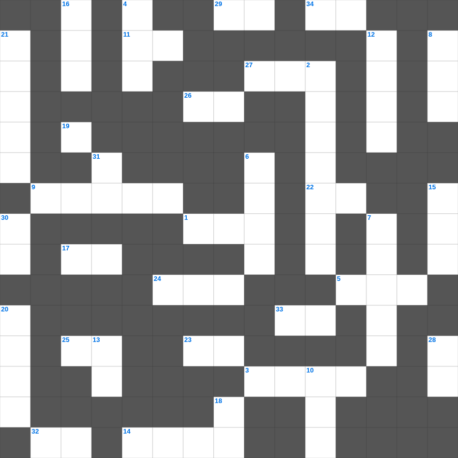

고린도전서 마스터 100 (2/2)
📌 서비스 정의
십자가로세로는 교회 주보와 주일학교에서 사용할 수 있는 성경 기반 가로세로 퍼즐 서비스입니다. 성경 인물, 사건, 핵심 구절을 바탕으로 제작되었습니다. 온라인 풀이 및 인쇄 기능을 제공합니다.
📖 고린도전서란?
고린도전서는 분열과 윤리적 문제로 어려움을 겪던 고린도 교회에 보낸 바울의 서신으로, 교회의 일치와 사랑, 영적 은사에 대한 가르침을 담고 있습니다.
📚 고린도전서의 주요 사건·주제
교회 분열 문제 다룸 · 성도의 윤리 문제 권면 · 성찬과 예배 질서에 대한 가르침 · 사랑장(고린도전서 13장) · 부활에 대한 가르침(고린도전서 15장)
고린도전서를 주제로 한 고린도전서 무료 성경퀴즈입니다. 35개의 단어를 맞춰보세요! 가로세로 낱말 퍼즐 형식으로 고린도전서의 핵심 내용을 재미있게 복습할 수 있습니다.

📝 가로 힌트
1. 우리가 다 반드시 그리스도의 이것 심판대 앞에 나타나게 되어 각각 선악간에 그 몸으로 행한 것을 따라 받으려 함이라
3. 엘리사에게 방을 만들어준 귀한 여인
5. 예레미야가 예언 사역을 시작했을 때의 유다 왕
9. 이방 여인과 결혼한 자들을 책망하며 느헤미야가 한 행동
11. 발람이 타고 가다 천사를 보고 말을 한 동물
14. 므낫세 지파 중 절반이 받은 땅의 위치
17. 하나님의 말씀에 이것하거나 감하지 말라
19. 고난의 대명사, 끝까지 하나님을 신뢰한 자
22. 이날은 여호와께서 정하신 것이라 이 날에 우리가 즐거워하고 이것 하리로다
23. 룻기는 결국 누구의 족보로 끝나는가
24. 이스라엘 사사, 기생 라합의 후손과 결혼(룻의 남편)
25. 우리 입에는 웃음이 가득하고 우리 혀에는 이것이 찼었도다
26. 서원 기도를 잘못하여 딸을 제물로 바치게 된 사사
27. 삼손의 아버지 이름
29. 보라 내가 이것을 행하리니 이제 나타낼 것이라
32. 스랍들이 모시고 섰는데 각기 여섯 이것이 있어
33. 이것이 모든 사람의 이것이니라
34. 출애굽을 이끈 이스라엘의 지도자
📝 세로 힌트
2. 아간과 그 가족들이 심판받은 골짜기
4. 정탐꾼 중 오직 여호수아와 갈렙만 이것에 들어감
6. 에돔 왕이 이스라엘이 지나가는 것을 거절한 길
7. 제사장의 축복 기도 '여호와는 네게 복을 주시고 너를 이것하시기를'
8. 내 눈의 흐르는 눈물이 이것 아니하고 쉬지 아니함이여
10. 집과 재물은 조상에게서 상속하거니와 슬기로운 아내는 이것께로서 말미암느니라
12. 이스라엘이 요단 강을 건너기 전 머문 평지
13. 마음의 즐거움은 이것이라도 심령의 근심은 뼈를 마르게 하느니라
15. 모세가 죽어 장사된 골짜기
16. 아론이 죽어 장사된 산
18. 하나님이 보여주신 끓는 가마의 방향
20. 인봉에 참여한 제사장의 수
21. 기드온이 여호와를 뵙고 지은 제단 이름
22. 기드온의 300 용사가 외친 구호 '여호와를 위하라, 이것을 위하라'
28. 네 마음에 이것을 행하고 다시는 목을 곧게 하지 말라
30. 기도로 아들 사무엘을 얻은 여인
31. 기드온이 하나님께 구한 징표 '이것에만 이슬이 내림'
🧩 이 퍼즐에서 배우는 내용
이 퍼즐은 고린도전서 마스터 100 (2/2)의 핵심 단어와 개념을 자연스럽게 복습할 수 있도록 구성되었습니다. 주일학교 수업이나 개인 성경공부에서 학습 내용을 점검하는 용도로 바로 활용할 수 있습니다.
🧑🏫 교회 교육 자료 활용
이 퍼즐은 주일학교 교재 추천 자료로 활용할 수 있고, 주일학교 주보에 넣기 좋은 분량으로 구성되어 있습니다. 수업용 주일학교 교안에 활동지로 붙이거나, 예배 후 복습용 주일학교 공과교재로 바로 사용할 수 있습니다.
🏷️ 키워드
고린도전서 무료 성경퀴즈, 고린도전서, 십자가로세로, 성경퀴즈, 말씀퀴즈, 가로세로퍼즐, 주일학교 교재 추천, 주일학교 주보, 주일학교 교안, 주일학교 공과교재